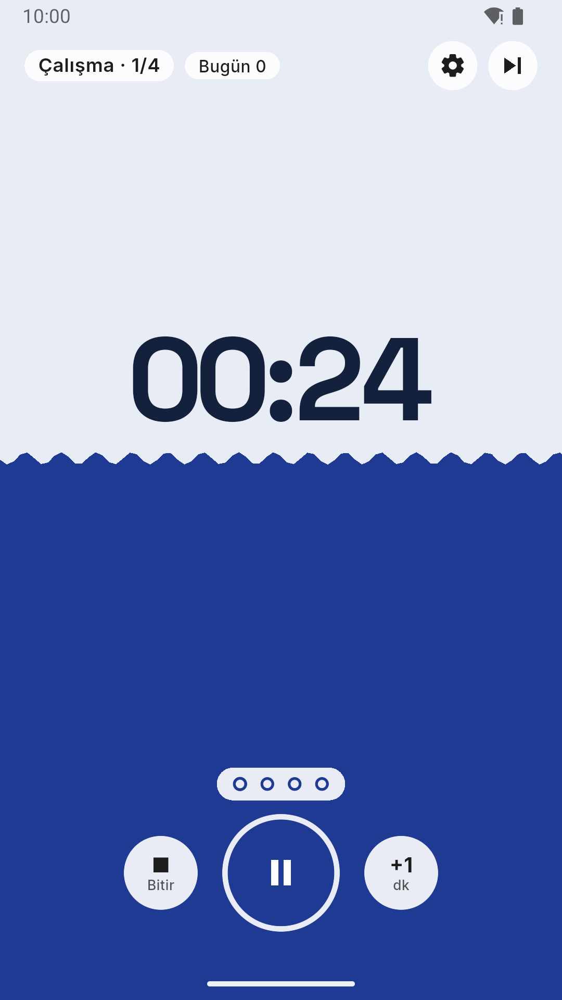
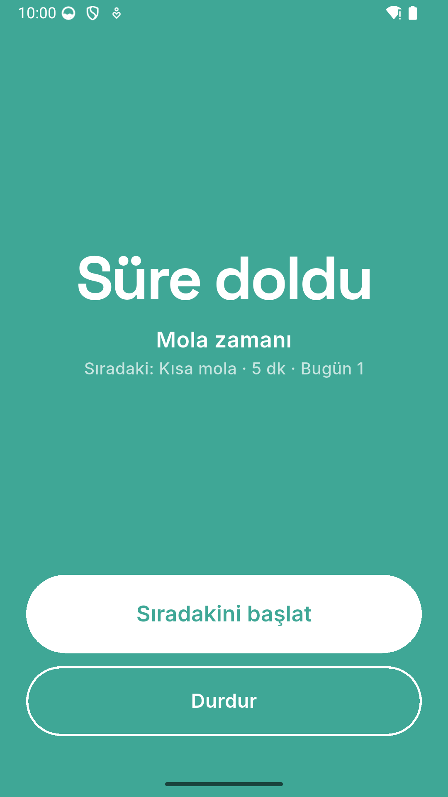
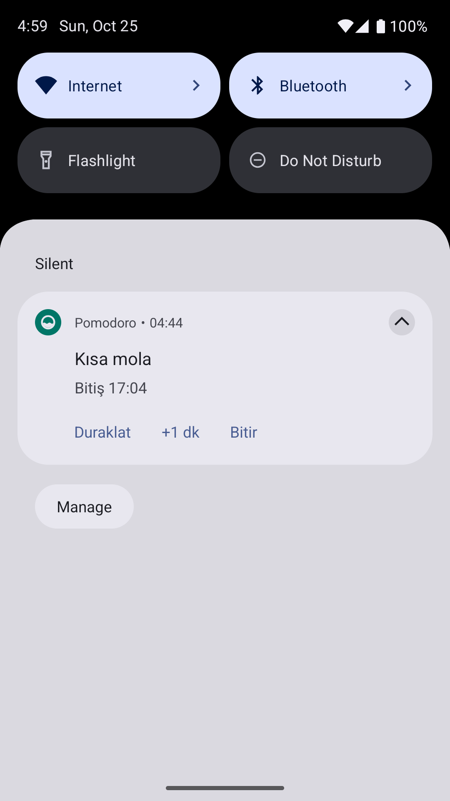

Telefon cebindeyken de doğru zamanda uyaran bir pomodoro sayacı. Çalıştıkça ekran doluyor, molada boşalıyor. Geri sayım bildirim panelinde akıyor; süre dolunca kilit ekranı alarmla açılıyor. İnternet yok, reklam yok.
01 — Ne yaptım
Başlat'a basıp telefonu cebine koyuyorsun. Panelde sayaç akıyor; oradan duraklatıp bir dakika ekleyebiliyorsun. Süre dolunca telefon kilitliyse ekran açılıyor, alarm sen durdurana kadar çalıyor. Ekranda çalışma sürdükçe ekran alttan lacivertle doluyor, molada yeşille dolu başlayıp boşalıyor.



02 — Neyi bilerek yapmadım
Bu uygulamanın göstereceği şey bildirimdi. İstatistik ve görev listesi başka bir uygulamanın konusu; eklesem asıl işi gölgede bırakırdı.
03 — Bu hafta gösterdiğim teknik yetenek
Seride bildirim paneli ilk kez ana yetenek. Paneldeki geri sayım Android'in
kendi kronometresi. Paneldeki butonlar uygulama kapalıyken bir arka plan
isolate'inde (kısa süre çalışan ayrı bir Dart ortamı) çalışıyor. "Süre doldu"
bildirimi bitiş anına zamanlanmış bekliyor. Panel adım adım değiştirilmiyor:
tek fonksiyon, esitle, her seferinde durumdan baştan kuruyor. Ekran da
panel de aynı durumdan çiziliyor.
Rakam iki kez çiziliyor; üstteki kopya dolgunun şekliyle kırpılıyor, bu yüzden rakamın dolguya giren kısmı beyaza dönüyor. Dolgunun üst kenarı kıvrımlı bir sinüs. Dolgu ekranın tepesine kadar çıkabildiği için ekranda kalan her şey beyaz bir hapın içinde; durum çubuğunun ikonları bile dolgu oraya varınca açığa dönüyor.
04 — Aldığım karar
Klasik yol, sayaç sürerken arka planda bir servis çalıştırıp her saniye bildirimi güncellemek. Bunun bedeli pil ve hiç durmayan kod. Daha kötüsü, Samsung gibi üreticiler arka plandaki uygulamaları kapatıyor; servis ölünce sayaç da duruyor.
Asıl soru: sayacı kimse saymasa ne olur?
Uygulama yalnız bitiş anını kaydediyor. Paneldeki saniyeleri Android ilerletiyor, "süre doldu" bildirimi de o ana zamanlanmış bekliyor. İkisi de sistemde yaşadığı için uygulama tamamen kapansa da sürüyor. Uygulama açılınca durum bitiş anından yeniden hesaplanıyor: süre geçmişse faz o an tamamlanıyor. Bedeli: panelde yalnız geri sayım var, canlı ilerleme çubuğu yok.
05 — Nasıl doğruladım
Saat dışarıdan verildiği için testte sahte saat ilerletiliyor; 25 dakika saniyeler içinde geçiyor. Kurallar (14), gece yarısı dahil fazın tamamlanması (8), alarm ve izin akışı (8), ekran ve animasyonlar (7), bildirim metinleri (6), panel butonları (4) ve kayıt (3). Paneli, izin pencerelerini ve kilit ekranını testler göremiyor; onları gerçek telefonda (Samsung, Android 16) denedim.
06 — Ne öğrendim
İlk sürümde süre dolunca kısa bir bildirim sesi çalıyordu; telefonda fark edilmedi, panel açılınca da Android sesi kesiyordu. Saat uygulamasının alarmı gibi çalışması için üç şey birlikte gerekti: tam ekran bildirim, alarm sesi ve uygulamanın kendi döngülü zili.
İncele